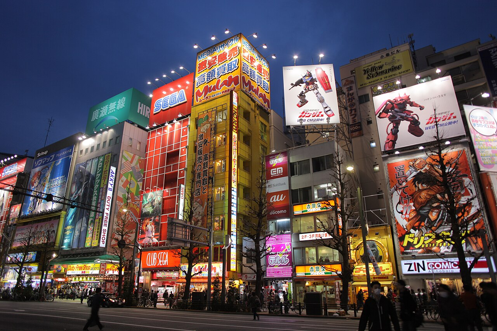

Токіо
Аніме, традиції та сучасна японська культура · Японія

Akihabara Night — ElHeineken, CC BY 4.0, Wikimedia Commons. Зменшена копія; без кадрування та змін змісту.
Коротко про місто
Токіо цікавить мене поєднанням сучасної японської попкультури та історичної спадщини. Акіхабара відома електронікою, відеоіграми, манґою й аніме, а храм Сенсо-дзі представляє іншу сторону міста — його давні традиції. [1] [2]
Найбільше мене приваблює можливість краще зрозуміти японську культуру через місто, у якому сучасні захоплення співіснують із минулим. Мені цікаві аніме, візуальна культура міських вулиць і самобутність японських традицій.
Історія обмежених зовнішніх контактів Японії також викликає в мене інтерес. Водночас країна не була повністю відрізана від світу: через Дедзіму в Нагасакі зберігалися зв’язки з європейцями. Тому її культуру я сприймаю як самобутню, але не позбавлену зовнішніх впливів. [5]
Чому я обрав це місто
Я обрав Токіо завдяки інтересу до аніме та японської культури. Мене приваблює те, як у цьому місті поєднуються яскрава сучасність і традиції.
Три цікаві факти
Визначні місця
Моя оцінка
Токіо для мене особливо привабливе завдяки аніме та японській культурі. Найцікавіша риса цього міста — сусідство сучасних захоплень і традицій.
Це оцінка за моїми інтересами, а не відгук про туристичну поїздку.
Дізнатися більше
Офіційний туристичний путівник GO TOKYO
Джерела фактів
- GO TOKYO: A guide to Akihabara
- GO TOKYO: Sensoji Temple
- Tokyo Museum Collection: The Procession of the Emperor Going to Tokyo
- Офіційний сайт Tokyo Tower: Main Deck
- Офіційний сайт Дедзіми: Dejima History
Джерела переглянуто 10 листопада 2026 року.